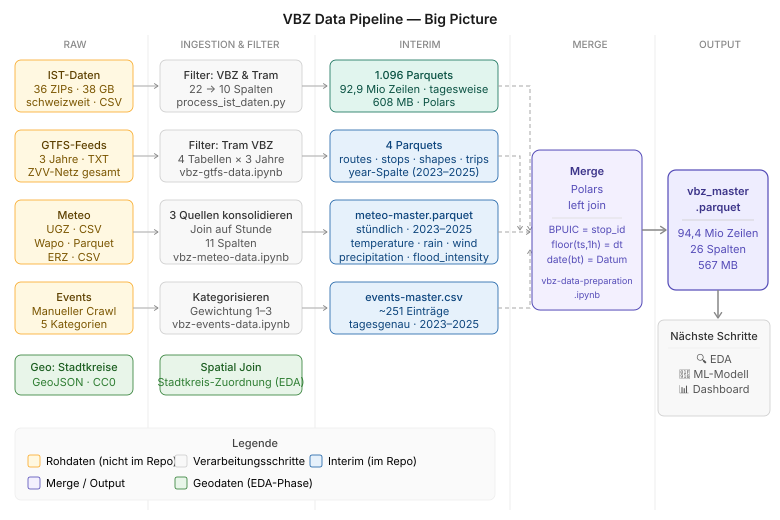
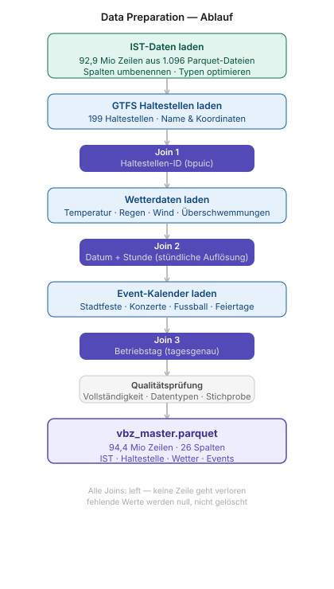

Zurich Tram Data
Ein sauberer Datensatz aus fünf Quellen
Die Data-Engineering-Grundlage für zh-tram-flow
38 GB
IST-Rohdaten, schweizweit
94,4 M
Halt-Ereignisse im Master
9
reproduzierbare Notebooks
github.com/kaywiegand/zh-tram-data
InhaltInhalt
Diese Präsentation auf einen Blick
1Das Projekt
2Reduktion
3Anreicherung
4Der Master
5Grenzen & Einordnung
Worum es geht
Ziel, Fokus und Einordnung des Projekts
Ziel
- Ein einziger, sauberer Master-Datensatz der realen VBZ-Tram-Halte
- Angereichert mit Fahrplan, Wetter, Events und Geografie
Fokus
- Der Weg dorthin: Recherche · Filterung · Zusammenführung · Qualitätssicherung
- Bewusst nicht Modellierung
Einordnung
- Data-Engineering-Grundlage für zh-tram-flow (Analyse & Verspätungsvorhersage)
Die Datenstrategie auf einen Blick
Fünf Quellen, ein Weg zum Master

IST · GTFS · Meteo · Events · Geo → Merge → vbz_master.parquet.
Das Überwältigende bändigen
Reduktion in drei Schritten
1
Reduzieren38 GB schweizweit → VBZ Tram Zürich (~400 Betreiber → 1)
2
Richtige WerkzeugePolars statt Pandas — ~4× schneller und sparsamer, per Benchmark belegt
3
Fokus21 → 10 Spalten, ~11 % Zeilen raus — echte Halte plus Ausfälle
Das Dünne aufwerten
Vier Quellen, ein bemerkenswerter Sonderfall
Vier Quellen angereichert
- GTFS Fahrplan (+3) · Meteo Wetter (+7) · Geo Stadtkreis (+2) · Events (+4)
- 10 → 26 Spalten
Spotlight: Events
- Keine Open-Data-Quelle → von Hand recherchiert und aufgebaut
- Der Fall, der echten Daten-Spürsinn verlangt
Die Join-Pipeline
Vier Quellen, drei Joins, eine Qualitätsprüfung

Vier Quellen → drei Joins → Qualitätsprüfung → vbz_master.parquet.
Der Master-Datensatz
Ein Datensatz, mit dem man wirklich arbeiten kann
vbz_master.parquet — eine Zeile pro Halt (~230 je Fahrt), angereichert mit Fahrplan, Wetter, Events und Stadtkreis. 1:1 reproduzierbar über die 9 Notebooks, deckungsgleich mit dem Original aus sf_data-research.
Grenzen & AusblickGrenzen & bewusste Versäumnisse
Transparenz über Known Issues
Grenze 1 · Backlog #1
trip_id ↔ GTFS nicht direkt matchbar- IST-FAHRT_BEZEICHNER (85:3849:…) und GTFS-trip_id (1.T0.1-10-…): 0 % Overlap
- Richtungsspezifische Analysen & Kaskadeneffekt bräuchten eine Umlauf-basierte Brücke
Grenze 2 · Backlog #2
UMLAUF_ID beim Reduktions-Schritt verworfen- Wäre die direktere Brücke für Kaskadenanalyse als trip_id-Kontinuität
- Nachträglich = volles Reprocessing ab den Roh-ZIPs
Bewusst dokumentierte Grenzen, nicht übersehene Fehler. Transparenz über Known Issues gehört zu sauberem Data Engineering.
Einordnung
Das Fundament und der Aufbau
zh-tram-data ist das Data-Engineering-Fundament: der saubere, reproduzierbare Master-Datensatz.
Analyse, Modellierung und Vorhersage bauen darauf auf — in zh-tram-flow. Zusammen der volle Data-Cycle, sauber in Fundament und Aufbau getrennt.